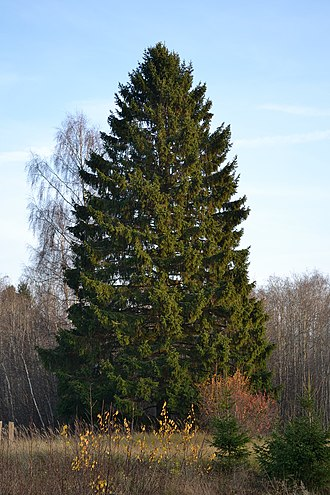

A Norvég lucfenyő (Picea abies) a skandináv országok leggyakoribb és legfontosabb fafaja. Az alábbiakban bemutatjuk a Norvég lucfenyő jellemzőit és tulajdonságait, valamint a faj gazdasági és ökológiai jelentőségét.
A Norvég lucfenyő egy nagy, lombhullató fa, amely eléri az 50 méter magasságot. A fajt rendszeresen művelik a fakitermelés és a fafeldolgozó ipar számára. A Norvég lucfenyő tűlevelei egyenesek és rövidek, a kérge pedig sötétbarna és repedezett. A faj rendkívül ellenálló az időjárás és a betegségek hatására, és nagyon lassan növekszik, ami nagyobb sűrűségű és keményebb fát eredményez.
A Norvég lucfenyőt a fakitermelés során széles körben használják faanyagként az építőiparban és a fafeldolgozó iparban, például gerendák, parketták és furnér készítéséhez. A Norvég lucfenyő olaját is gyakran használják az illóolajok és a kozmetikai termékek előállításához.
A Norvég lucfenyő rendkívül fontos a skandináv erdőgazdálkodásban és az erdészeti iparban. Az erdőtulajdonosok gondosan kezelik az erdőket, hogy biztosítsák az erdőfenntartást és a fenntartható fahasznosítást.
Az erdők jelentős szerepet játszanak a klímaváltozás elleni küzdelemben is. A Norvég lucfenyő az egyik legjobb fajta széndioxidtárolásra a fák között, és az erdők fenntartása és kezelése kulcsfontosságú a klímaváltozás elleni küzdelemben.

forrás: Wikipédia